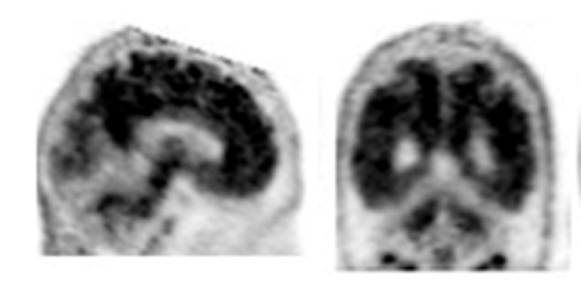
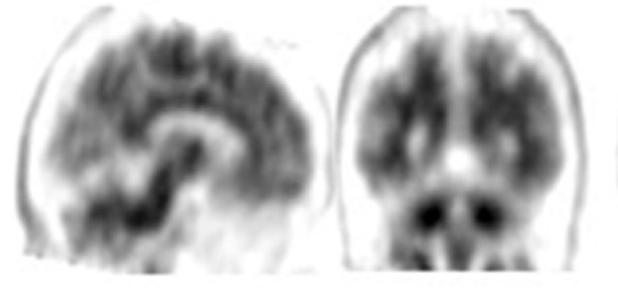

Imaging of Dementia
Patrick J Rock, M.D.
Goals
- Understand clinical assessment tools and disease course
- Review common etiologies and imaging features
- Recognize key anatomy relevant to dementia
- Interpret major visual rating scales
- Correlate PET and MR findings with pathology
Definition
Dementia is a clinical syndrome charactarized by progressive decline in cognitive function severe enough to interfere with daily lifes.
What is the role of imaging in dementia?
- Exclude structural and secondary causes
- Evaluate cerebral volume loss
- Assess degree of vascular disase
- Identify microhemorrhage
. Coronal T1-weighted image (A) shows predominant atrophy of the hippocampus (arrows). This is associated with hypoperfusion of the posterior cingulate cortex (arrow), known as absent light bulb sign, on the arterial spin labeling image (B). In a healthy individual, the perfusion at rest of the posterior cingulate cortex should be as least as high as the remaining gray matter resulting in a “light bulb” appearance. (C, D) MRI scans in a 65-year-old male patient show predominant parietal atrophy (arrows) suggestive of an atypical parietal variant of AD. The parietal variant of AD often affects younger patients and can be asymmetric. Corresponding arterial spin labeling image (D) shows associated hypoperfusion, which is likely overestimated by the atrophy/partial volume effect.") Neuroimaging in Dementia: More than Typical Alzheimer Disease. Sven Haller, Hans Rolf Jäger, Meike W. Vernooij, and Frederik Barkhof. Radiology 2023 308:3
Neuroimaging in Dementia: More than Typical Alzheimer Disease. Sven Haller, Hans Rolf Jäger, Meike W. Vernooij, and Frederik Barkhof. Radiology 2023 308:3
Anatomic structures
- Choroid fissure
- Hippocampus
- Collateral sulcus
- Parahippocampal gyrus
- Precuneus
- Cingulate sulcus
- Marginal branch
- Parieto-occipital sulcus
 Image courtesy of Radiology Assistant
Image courtesy of Radiology Assistant
 Gaillard F, Neuroanatomy: medial cortex (diagrams). Case study, Radiopaedia.org (Accessed on 08 Oct 2025) https://doi.org/10.53347/rID-47208
Gaillard F, Neuroanatomy: medial cortex (diagrams). Case study, Radiopaedia.org (Accessed on 08 Oct 2025) https://doi.org/10.53347/rID-47208
Common Etiologies
- Alzheimer disease
- Vascular dementia
- Frontotemporal lobar degeneration
- Lewy body dementia
- Parkinson’s-related
- CJD and prion diseases
Treatable Causes
- Normal pressure hydrocephalus
- Subdural hematoma
- Mass lesion or tumor
- Vitamin deficiency, infection, metabolic causes
Proteinopathies
- Amyloid beta: Alzheimer disease
- Tau: AD, PSP, CBD, FTD
- TDP-43: FTD, ALS
- FUS/FET: rare FTD variants
- Prions: CJD
- Alpha-synuclein: Parkinson’s, Lewy body
MR Protocol for Dementia
- T1 — atrophy patterns, MTA/GCA scoring
- T2/FLAIR — white matter disease (Fazekas)
- DWI — restricted diffusion (CJD, infarcts)
- SWI — microhemorrhages, amyloid angiopathy
- Coronal oblique through hippocampus
Visual Rating Scales
- MTA (Medial Temporal Atrophy): hippocampal volume loss
- GCA (Global Cortical Atrophy): generalized cortical thinning
- Fazekas: periventricular and deep white matter changes
- PSCI: post-stroke cognitive impairment
Medial temporal lobe atrophy score

- 0: no CSF is visible around the hippocampus
- 1: choroid fissure is slightly widened
- 2: moderate widening of the choroid fissure, mild enlargement of the temporal horn and mild loss of hippocampal height
- 3: marked widening of the choroid fissure, moderate enlargement of the temporal horn, and moderate loss of hippocampal height
- 4: marked widening of the choroid fissure, marked enlargement of the temporal horn, and the hippocampus is markedly atrophied and internal structure is lost
Case courtesy of Radiology Assistant
Global cortical atrophy scale

- 0: normal volume / no ventricular enlargement
- 1: opening of sulci / mild ventricular enlargement
- 2: volume loss of gyri / moderate ventricular enlargement
- 3: 'knife blade' atrophy / severe ventricular enlargement
PET and SPECT Imaging
- FDG-PET: hypometabolism in temporoparietal regions (AD)
- Amyvid: amyloid PET tracer (florbetapir)
- 123I-Ioflupane SPECT (DaTscan): reduced uptake in Lewy/Parkinsonian dementias
Progressive Dementias
- Gradual, irreversible cognitive decline
- Contrast with reversible causes (hydrocephalus, B12 deficiency)
- Examples: AD, FTD, DLB, CJD
Creutzfeldt–Jakob Disease
- Rapidly progressive dementia
- Restricted diffusion in cortex and basal ganglia
- Caused by prion protein misfolding

Clinical Tools
- Mini-Mental Status Exam (MMSE)
- MoCA
- Clock draw test
- Neuropsychological assessment

Monoclonal antibodies that target amyloid-beta


Data

Amyloid Related Imaging Abnormalities
ARIA refers to MRI signal changes occurring in patients receiving amyloid-modifying therapeutic agents.

ARIA-E
ARIA-E refers to increased signal on T2/FLAIR sequences in in patients receiving amyloid-modifying therapeutic agents.

ARIA-H
ARIA-H refers to new signal abnormalities on heme-sensitive sequences in patients receiving amyloid-modifying therapeutic agents.

Cerebrovascular Disease Subtypes
- White matter hyperintensities
- Microbleeds
- Enlarged perivascular spaces
- État criblé = enlarged perivascular spaces at the level of the basal ganglia
- Strategic lacunes
- Cortical microinfarcts
- Hippocampal microinfarcts
Cerebrovascular Disease Subtypes
White matter hyperintensities
- Seen in 90% of adults >40
- Increase with age
- Generally correlates with risk of strokes and cognitive decline
 Gaillard F, Vascular dementia. Case study, Radiopaedia.org (Accessed on 07 Oct 2025) https://doi.org/10.53347/rID-25641
Gaillard F, Vascular dementia. Case study, Radiopaedia.org (Accessed on 07 Oct 2025) https://doi.org/10.53347/rID-25641
Fazekas Scale

Cerebrovascular Disease Subtypes
Microbleeds
- Also associated with aging and cognitive decline;
- Deep → hypertension;
- Lobar → cerebral amyloid angiopathy;
- While CAA is associated with AD, itis only seen in ~20-30% of cases;
- Absence of CAA does not rule out AD;
 Gaillard F, Chronic hypertensive encephalopathy. Case study, Radiopaedia.org (Accessed on 07 Oct 2025) https://doi.org/10.53347/rID-4564
Gaillard F, Chronic hypertensive encephalopathy. Case study, Radiopaedia.org (Accessed on 07 Oct 2025) https://doi.org/10.53347/rID-4564
Cerebrovascular Disease Subtypes
Enlarged perivascular spaces
Cerebrovascular Disease Subtypes
État Criblé

Cerebrovascular Disease Subtypes
Strategic lacunes
Cerebrovascular Disease Subtypes
Cortical microinfarcts
Cerebrovascular Disease Subtypes
Hippocampal microinfarcts
Case 1

What kind of study is this? What is the diagnosis?
Positive Florbetapir F 18 scan: decreased gray-white contrast with increased cortical radioactivity that is comparable to the
radioactivity in the adjacent white matter.
Case 2

What kind of study is this? What is the diagnosis?
Negative Florbetapir F 18 scan: normal preserved gray-white contrast with the cortical radioactivity less than the adjacent white matter.
The FDA label for this agent is a great resource and was the source of these cases: Amyvid label
Semantic pedantry
What is the mesial temporal lobe?
The hippocampus and parahippocampal formation (amygdyla, parahippocampal gyrus, entorhinal cortex).
Case 3

What is this called?
The precuneus. Cuneus is Latin for “wedge”. The precuneus comes before the wedge.
Case 4

What is this called?
The cuneus.
Case 5

What is this called?
The Lingual Gyrus. It might have been called the post cuneus, alas.
References
- World Health Organization. (n.d.). Dementia. World Health Organization. https://www.who.int/news-room/fact-sheets/detail/dementia
- Neuroimaging in Dementia: More than Typical Alzheimer Disease. Sven Haller, Hans Rolf Jäger, Meike W. Vernooij, and Frederik Barkhof. Radiology 2023 308:3
Image references are given in source code if not present in slide.